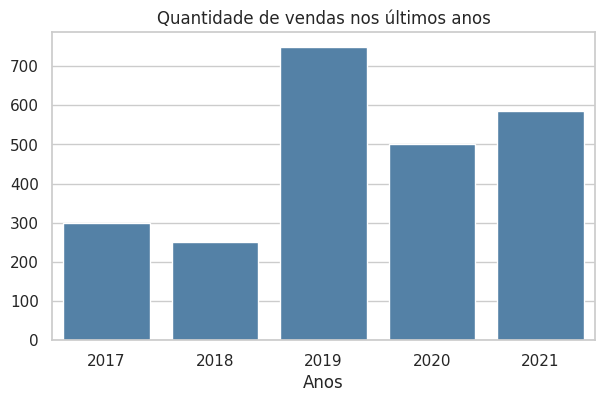
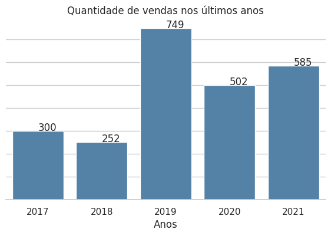
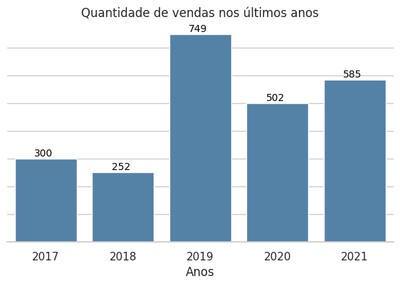
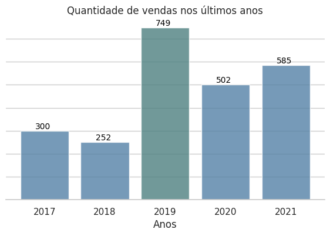

Gráfico de barras com rótulos customizados
Tutorial para definir um gráfico de barras com rótulos customizados.
Neste tutorial vamos criar um gráfico de barras para as vendas de um produto A entre os anos de 2017 a 2021. A dificuldade aqui é alinhar o texto do valor da venda e a barra do gráfico para um determinado ano.
Apesar de ser uma tarefa simples, esse é um bom exemplo de como eu abordo a criação de uma visualização de dados, através de um desenvolvimento iterativo.
Nesse exemplo, nós vamos utilizar as bibliotecas matplotlib e seaborn com o estilo whitegrid definido.
from matplotlib import pyplot as plt
import seaborn as sns
sns.set_theme(style="whitegrid")
Como exemplo, nós vamos analisar os dados de vendas entre os anos de 2017 a 2021 de um produto A.
anos = [ 2017, 2018, 2019, 2020, 2021 ]
vendas = [ 300, 252, 749, 502, 585]
O primeiro passo é utilizar as funções presentes nas bibliotecas matplotlib e seaborn para obter o gráfico padrão, sem muitas customizações.
# definimos as dimensões da figura
plt.figure(figsize=(7, 4))
# comando para criar o gráfico
ax = sns.barplot(x=anos, y=vendas, color='steelblue')

Nesse gráfico os anos são representados no eixo X, enquanto os valores de vendas são apresentados no eixo Y. Foi definida a cor padrão steelblue para todas as barras. O tamanho do gráfico, e a proporção entre a largura e altura, foi definida como (7,4)
Desse gráfico básico, o que podemos querer melhorar nele? Por exemplo, alguns pontos seriam:
- Inserir um título informativo no gráfico.
- Adicionar um rótulo descritivo no eixo X ou Y.
- Remover elementos desnecessários para obter uma figura mais limpa.
- Talvez transformar os valores do eixo Y em rótulos das colunas para cada anos.
A inserção do título e de um rótulo do eixo X é simples e pode ser feito através das funções plt.title() e plt.xlabel() da biblioteca matplotlib. Não há segredo nisso.
plt.figure(figsize=(7, 4))
ax = sns.barplot(x=anos, y=vendas, color='steelblue')
# Adicionando o título
plt.title("Quantidade de vendas nos últimos anos", fontsize=12)
# Adicionando o label para o eixo X
plt.xlabel('Anos')

Para eliminar a borda dos gráficos, podemos utilizar a função .despine disponibilizado pela biblioteca seaborn.
plt.figure(figsize=(7, 4))
ax = sns.barplot(x=anos, y=vendas, color='steelblue')
plt.title("Quantidade de vendas nos últimos anos", fontsize=12)
plt.xlabel('Anos')
# remove o cortorno dos eixos.
sns.despine(left=True)

O gráfico já parece muito bom assim. Já é possível comparar os valores das vendas entre um ano e outro. Porém, vamos ver como o gráfico fica se retirarmos os valores que aparecem no eixo Y (ticks) talvez colocar o rótulo nesse eixo, e fixar os valores do intervalo que são mostrados.
Fixar o intervalo do eixo Y é necessário para garantir que os rótulos que apareçam sob as barras não sejam truncados, isto é, sejam posicionados fora dos limites considerados pelo eixo Y.
plt.figure(figsize=(7, 4))
ax = sns.barplot(x=anos, y=vendas, color='steelblue')
plt.title("Quantidade de vendas nos últimos anos", fontsize=12)
plt.xlabel('Anos')
sns.despine(left=True)
# remove os valores do eixo Y 0, 100, 200 etc.
ax.set(yticklabels=[])
# Insere o rótulo vendas no eixo Y
plt.ylabel('Vendas')
# Fixa o range considerado para o eixo y isto é, de 0 até 790
plt.ylim((0, 790))
Talvez o rótulo no eixo Y não seja tão necessário assim, uma vez que o título do gráfico já é bem descritivo.
Para posicionar os rótulos acima de cada barra, vamos percorrer os objetos que definem essas barras, os objetos patches para obter as coordenadas de início da barra (p.get_x) a sua largura (p.get_width) e altura (p.get_height). Os rótulos serão criados a partir do método ax.annotate do objeto Axes que representa o nosso gráfico.
plt.figure(figsize=(7, 4))
ax = sns.barplot(x=anos, y=vendas, color='steelblue')
plt.title("Quantidade de vendas nos últimos anos", fontsize=12)
plt.xlabel('Anos')
sns.despine(left=True)
ax.set(yticklabels=[])
plt.ylim((0, 790))
# percorre os patches que definem as barras
for p in ax.patches:
ax.annotate("%.0f" % p.get_height(), # texto a ser impresso
# coordenadas (X, Y) do texto
(p.get_x() + p.get_width() / 2., p.get_height())
)

Note que os rótulos ficaram ligeiramente deslocados em relação a barra. Para corrigir isso é necessário informar alguns parâmetros adicionais no método ax.annotate como alinhamento horizontal, alinhamento vertical e deslocamentos adicionais.
plt.figure(figsize=(7, 4))
ax = sns.barplot(x=anos, y=vendas, color='steelblue')
plt.title("Quantidade de vendas nos últimos anos", fontsize=12)
plt.xlabel('Anos')
sns.despine(left=True)
ax.set(yticklabels=[])
plt.ylim((0, 790))
for bar in ax.patches:
ax.annotate("%.0f" % bar.get_height(), # texto
# coordenada xy
(bar.get_x() + bar.get_width() / 2., bar.get_height() ),
# Define o alinhamento horizontal e vertical do texto
ha='center', va='center',
# Tamanho e cor da fonte
fontsize=10,
color='black',
# Deslocamento adicional
xytext=(-2, 5),
textcoords='offset points'
)
Os parâmetros ha e va definem o alinhamento do conteúdo da caixa de texto. Já xytext e textcoords controlam o posicionamento da caixa de texto em relação à coordenada anotada (xy).
textcoordsdefine o sistema de coordenadas para interpretar xytext. Por exemplo,'offset points'define que o deslocamento é dados em pontos tipográficos (1/72 de polegada).xytextdefine um deslocamento adicional em relação a (xy). Esse deslocamento pode ser um par de valores(dx, dy), indicando quantos pontos ou unidades a anotação será movida.
O valor xytext = (-2, 5) indica que o texto será movido 5 pontos tipográficos para cima e 2 pontos tipográficos à esquerda, ajustando o posicionamento do rótulo.
Os resultados dessas modificações são apresentados na figura a seguir.

Extras
Como estamos percorrendo os objetos que definem as barras do nosso gráfico, é possível alterar as propriedades dessa colunas. Por exemplo, no código abaixo estamos alterando a transparência das barras e alterando a cor da barra que representa o maior valor de vendas.
Além disso, a chamada ao método ax.axis("tight") faz com que o matplotlib recalcule certos parâmetros para melhorar os ajustes do gráfico ao tamanho da figura.
plt.figure(figsize=(7, 4))
ax = sns.barplot(x=anos, y=vendas, color='steelblue')
plt.title("Quantidade de vendas nos últimos anos", fontsize=12)
plt.xlabel('Anos')
sns.despine(left=True)
ax.set(yticklabels=[])
plt.ylim((0, 790))
for bar in ax.patches:
# Alterando a cor
if bar.get_height() == max(vendas) :
bar.set_facecolor([0.3, 0.5, 0.5])
# Alterando a transparência
bar.set_alpha(0.8)
ax.annotate("%.0f" % bar.get_height(),
(bar.get_x() + bar.get_width() / 2., bar.get_height() ),
ha='center', va='center',
fontsize=10,
color='black',
xytext=(-2, 5),
textcoords='offset points'
)
_ = ax.axis("tight")

Referências
Matheus Budkewicz. Gráficos de barra com matplotlib. Disponível em https://medium.com/horadecodar/gr%C3%A1ficos-de-barra-com-matplotlib-85628bfc4351 Acessado em: 21 de fev. de 2025.
Matplotlib. matplotlib.pyplot.annotate. https://matplotlib.org/stable/api/_as_gen/matplotlib.pyplot.annotate.html Acessado em: 21 de fev. de 2025.
Matplotlib. matplotlib.patches.Patch. Disponível em: https://matplotlib.org/stable/api/_as_gen/matplotlib.patches.Patch.html Acessado em: 21 de fev. de 2025.